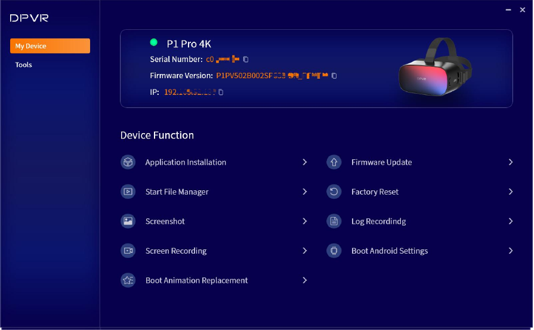
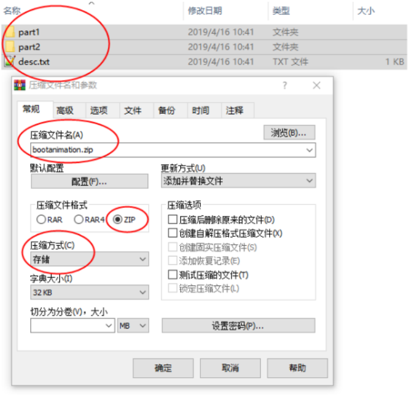
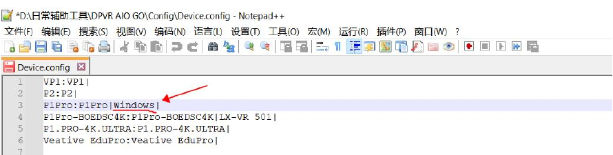

Set up AIO GO and maintain a headset
Identify the headset over USB before selecting a function. Boot-animation replacement and custom-model recognition are optional tasks.
Prerequisites
- Prepare a Windows 10 PC, a supported headset and a USB data cable.
- Download and extract the official AIO GO package. Prepare images and a ZIP utility only if replacing the boot animation.
Install and start
Run DPVR AIO GO Setup.exe on Windows 10, then open the installed tool. No Device Found is expected before connection. Connect the headset before attempting maintenance.
Read: Install and start →Confirm recognition over USB
Power on the headset and connect it with a USB data cable. Wait for the model, serial number, firmware version and IP, then verify the intended device. If not found, use the driver and connection-manual entries shown in the tool. Check connectivity first; custom names are addressed in the final two steps.
Read: Confirm recognition over USB →
Open the required function
Select app installation, file management, screenshots, recording, logs or Android settings and follow that function’s prompts. Firmware update, factory reset and boot-animation replacement are also listed. This PDF does not detail the first two operations, so do not use them as connection tests. Stop here unless you need animation replacement or custom-model recognition.
Read: Open the required function →Optional: prepare static or animated images
For a static effect, prepare a 960×280 PNG bitmap; the guide specifies 32-bit PNG and names the single image 0.1.png. For animation, prepare consistently sized and formatted PNG frames with sequential filenames; the guide recommends 3–5 seconds. Choose one route rather than completing both. The source’s background-color wording is unclear, so no mandatory color rule is added.
Read: Optional: prepare static or animated images →Organize frames and the descriptor
Place the selected image or sequence in the two stage folders referenced by desc.txt. This example uses part1 and part2, matching the descriptor and ZIP screenshots. Populate both stage folders. Other prose says part0 and part1; do not mix those names with this descriptor. The first stage runs once and the second loops. 960 and 280 are dimensions; 60 is the example playback-rate setting.
bootanimation.zip
├── part1/
├── part2/
└── desc.txtSave desc.txt and check the empty line
Create desc.txt with the following content and save it as ANSI. The first three lines contain data and the fourth must be empty. The final entries on lines two and three must match the actual frame folders. Reopen the saved file to check it.
960 280 60
p 1 0 part1
p 0 0 part2
Create a ZIP using Store
Select both stage folders and desc.txt directly. Choose ZIP format and Store instead of the default Standard method. Do not add an enclosing bootanimation folder. Use bootanimation.zip, matching the archive screenshot and file dialog; the prose also contains booanimation.zip. Inspect the structure and compression method; the guide’s utility shows a 100% size ratio.
Read: Create a ZIP using Store →
Replace or restore the animation
With USB connected, open Boot Animation Replacement, choose Start Replacement, select the checked ZIP and follow the tool’s prompts. To restore the original animation, use Restore initialization in the same feature. This restores the animation, not factory settings. Static and animated packages use the same entry.
Read: Replace or restore the animation →Only for an unrecognized custom name: open configuration
If the headset’s model name was customized, right-click the AIO GO shortcut and select Open file location. Open Config, then edit Device.config with VS Code, Notepad++ or Notepad. This changes name matching; it does not add support for incompatible hardware.
Read: Only for an unrecognized custom name: open configuration →Append the name to the correct device type
Find the line for the actual device type, append the custom name after existing names and retain a trailing |, then save and close. In the official example, a P1Pro named Windows becomes P1Pro:P1Pro|Windows|. This illustrates the format; do not add Windows to every device. Return to the tool and check recognition.
P1Pro:P1Pro|Windows|